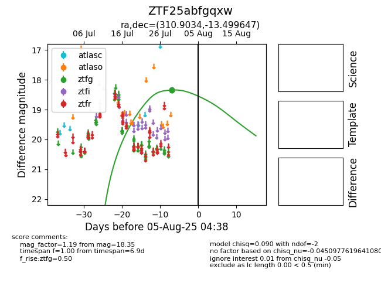

Target ZTF25abfgqxw at 2025-08-05 04:38, see:
FINK: fink-portal.org/ZTF25abfgqxw
Lasair: lasair-ztf.lsst.ac.uk/objects/ZTF25abfgqxw
ALeRCE: alerce.online/object/ZTF25abfgqxw
alt names
ZTF25abfgqxw (ztf,fink)
coordinates:
equatorial (ra, dec) = (310.9034,-13.49965)
galactic (l, b) = (32.9786,-30.88455)
photometry
last ztfg=18.35
3 ztfg detections
